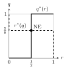

5 Mixed strategies and existence
Odds & Evens has no Nash equilibrium in pure strategies, which is unsatisfying if the equilibrium is meant to be the prediction of a game. The fix is to let players randomise. With mixed strategies every finite game has an equilibrium — Nash’s theorem — and new tools appear: the indifference principle for computing equilibria, best-response diagrams, and dominance by mixtures. The chapter ends with dynamics (fictitious play), a class of games where equilibria are easy (potential games), and the bad news that in general they are hard to compute.
5.1 Mixed strategies
Enlarging Odds & Evens with a “flip a fair coin” strategy ½ for both players shows a cell, \((\tfrac12, \tfrac12)\), from which nobody wants to move. Let us formalise this.
For a non-empty finite set \(A\), a probability distribution on \(A\) is \(p : A \to [0,1]\) with \(\sum_{x \in A} p(x) = 1\); the set of all of them is the simplex \(\Delta A\). A mixed strategy of player \(i\) in \(G = \{S_1, \dots, S_n; u_1, \dots, u_n\}\) is \(m_i \in \Delta S_i\). Its support is \(\{s_i \in S_i : m_i(s_i) > 0\}\).
A pure strategy \(s_i\) is identified with the degenerate distribution putting probability \(1\) on it. Players randomise independently, and payoffs are extended to mixed profiles by expectation (they are vN-M utilities): \[u_i(m_1, \dots, m_n) = \sum_{s \in S} m_1(s_1)\, m_2(s_2) \cdots m_n(s_n)\; u_i(s).\]
Let Odd play \(0\) with probability \(q\) and Even play \(0\) with probability \(r\). Odd’s expected payoff is \[u_{\text{Odd}}(q, r) = -4qr + 4q(1-r) + 4(1-q)r - 4(1-q)(1-r) = -4(2q-1)(2r-1),\] and Even’s is its opposite. If \(q = \tfrac12\), Even’s payoff is \(0\) whatever \(r\); if \(r = \tfrac12\), the same holds for Odd. So \((q, r) = (\tfrac12, \tfrac12)\) is an equilibrium, and one checks it is the only one: if Odd’s payoff were negative (or positive) at another profile, Odd (or Even) could profitably move.
5.2 Equilibrium and dominance with mixtures
A profile \(m^* \in \Delta S_1 \times \dots \times \Delta S_n\) is a Nash equilibrium if for every \(i\) \[u_i(m_i^*, m_{-i}^*) \geq u_i(m_i, m_{-i}^*) \qquad \forall\, m_i \in \Delta S_i .\]
Dominance is defined as before with mixed strategies on both sides. Although there are a continuum of opponents’ mixtures, it suffices to check pure ones: \(m_i'\) strictly dominates \(m_i\) iff \(u_i(m_i', s_{-i}) > u_i(m_i, s_{-i})\) for every pure \(s_{-i} \in S_{-i}\) (expected payoffs are linear in each opponent’s mixture).
| L | C | R | |
|---|---|---|---|
| T | 7, 4 | 5, 0 | 8, 1 |
| D | 6, 0 | 3, 4 | 9, 1 |
\(R\) is not dominated by \(L\) or by \(C\), but \(\tfrac12 L + \tfrac12 C\) gives player B a payoff of \(2\) against both \(T\) and \(D\), more than \(R\)’s \(1\). Eliminating \(R\), \(T\) dominates \(D\) for A; then \(L\) dominates \(C\) for B. The unique NE is \((T, L)\).
IESDS in mixed strategies (IESDS\(_m\)) keeps the good properties of the pure case: Nash equilibria survive it and the order of elimination is irrelevant. As before, only strict dominance may be used — a weakly dominated strategy can be an equilibrium or belong to the support of one.
A mixed profile \(m\) is a Nash equilibrium if and only if, for every player \(i\), \[u_i(m) = u_i(s_i, m_{-i}) \quad \forall\, s_i \in \operatorname{supp}(m_i), \qquad u_i(m) \geq u_i(s_i, m_{-i}) \quad \forall\, s_i \notin \operatorname{supp}(m_i).\]
Every pure strategy in the support of an equilibrium mixture earns the same payoff, and no strategy outside earns more. (If one strategy in the support earned more, shifting probability onto it would raise the payoff.) In particular a pure NE remains a NE when mixed strategies are allowed.
Let Ann play \(R\) with probability \(q\) and Brian with probability \(r\): \[u_A(q,r) = 2qr + (1-q)(1-r), \qquad u_B(q, r) = qr + 2(1-q)(1-r).\] A fully mixed NE requires Ann to be indifferent between \(R\) and \(S\): \(u_A(1, r) = u_A(0, r)\), i.e. \(2r = 1 - r\), so \(r = \tfrac13\). Brian’s indifference, \(q = 2(1-q)\), gives \(q = \tfrac23\). The third equilibrium is \((q, r) = (\tfrac23, \tfrac13)\), with expected payoffs \((\tfrac23, \tfrac23)\) — worse for both than either pure equilibrium, because of miscoordination.
In a mixed equilibrium, each player’s mixture is pinned down by the opponent’s indifference, not their own payoffs. Raising Ann’s payoff at \((R,R)\) changes Brian’s equilibrium mixture, not Ann’s.
5.3 Interpreting mixed strategies
In the end players take pure actions. Three readings of “randomisation” are common:
- Large numbers: in \(M\) independent one-shot plays, \(q\) is the fraction of times a pure strategy is chosen.
- Fuzzy action: the player genuinely does not settle on an action.
- Beliefs: \(q\) is the uncertainty the opponent has about my (pure) choice. Harsanyi’s purification theorem (Chapter 12) makes this precise.
5.4 Best-response diagrams
Beliefs are now elements of \(\Delta S_{-i}\) and \(BR_i : \Delta S_{-i} \rightrightarrows \Delta S_i\). Consider
| Art \ Bea | F | G |
|---|---|---|
| U | 6, 1 | 0, 4 |
| D | 2, 5 | 4, 0 |
Let Art play \(U\) with probability \(q\), Bea play \(F\) with probability \(r\). Art gets \(6r\) from \(U\) and \(2r + 4(1-r)\) from \(D\): his best response is \(q = 1\) if \(r > \tfrac12\), \(q = 0\) if \(r < \tfrac12\), anything at \(r = \tfrac12\). Bea gets \(q + 5(1-q)\) from \(F\) and \(4q\) from \(G\): her best response is \(r = 1\) if \(q < \tfrac58\), \(r = 0\) if \(q > \tfrac58\).

Figure: best-response correspondences of Art (solid) and Bea (dashed); they cross only at the mixed equilibrium.
The unique NE is \((q, r) = (\tfrac58, \tfrac12)\). For the Battle of the Sexes the same construction gives two step functions crossing three times: the two pure equilibria at the corners and the mixed one at \((\tfrac23, \tfrac13)\). In every \(2\times 2\) game the two staircases, running across the unit square, must cross at least once.
5.5 Nash’s theorem
Every game with finitely many players and finite strategy sets has at least one Nash equilibrium, possibly in mixed strategies.
Define \(BR_i(m_{-i}) = \arg\max_{m_i \in \Delta S_i} u_i(m_i, m_{-i})\) and the aggregate correspondence on \(\Delta S = \prod_i \Delta S_i\), \[BR(m) = BR_1(m_{-1}) \times \dots \times BR_n(m_{-n}).\] A profile is a NE iff it is a fixed point, \(m \in BR(m)\). \(BR_i(m_{-i})\) is never empty and always contains a pure strategy; by linearity of \(u_i\) in \(m_i\) it is convex (the set of mixtures over the maximising pure strategies).
Brouwer: a continuous function from a closed interval (more generally a compact convex set) into itself has a fixed point. In one dimension this is Bolzano’s theorem applied to \(f(x) - x\) on \([0,1]\).
Kakutani: let \(A \subset \mathbb R^n\) be non-empty, compact and convex and \(F : A \rightrightarrows A\) a correspondence with non-empty convex values and closed graph (\(x_k \to x\), \(y_k \to y\), \(y_k \in F(x_k)\) imply \(y \in F(x)\)). Then there exists \(x^* \in F(x^*)\).
Proof of Nash’s theorem. \(\Delta S\) is non-empty, compact and convex; \(BR\) has non-empty convex values; its graph is closed because \(u_i\) is continuous. Kakutani’s theorem gives a fixed point. \(\square\)
5.6 Fictitious play
In fictitious play (Brown, 1951) the “regrets” of a NE become actual moves: each player assumes the opponents keep playing the empirical frequencies of their past actions and best-responds to them. Full rationality is relaxed — predictions may be wrong and are corrected over time. Nash equilibria are absorbing points of the dynamics, but they need not be reached: in rock–paper–scissors (with Shapley’s variant as the classical counterexample) play cycles forever. Fictitious play does converge for games solvable by IESDS, for potential games, for zero-sum games, and for \(2 \times N\) games with generic payoffs.
5.7 Potential games
A function \(\Omega : S \to \mathbb R\) is an exact potential for \(G\) if for every \(i\), \(s_i, s_i'\) and \(s_{-i}\) \[\Omega(s_i', s_{-i}) - \Omega(s_i, s_{-i}) = u_i(s_i', s_{-i}) - u_i(s_i, s_{-i}),\] a weighted potential with weights \(w_i > 0\) if the right-hand side is multiplied by \(w_i\), and an ordinal potential if \[\Omega(s_i', s_{-i}) > \Omega(s_i, s_{-i}) \iff u_i(s_i', s_{-i}) > u_i(s_i, s_{-i}).\] A game admitting one is a (exact, weighted, ordinal) potential game.
If \(G\) has an ordinal potential, its Nash equilibria coincide with those of the game in which every player’s payoff is \(\Omega\): a multi-player problem collapses into a single-objective optimisation, which is what makes potential games attractive for distributed optimisation.
The Prisoner’s Dilemma (with \(-1, -9, 0, -6\)) has the exact potential \(\Omega(M,M) = 0\), \(\Omega(M,F) = \Omega(F,M) = 1\), \(\Omega(F,F) = 4\); the players maximise \(\Omega\), not their joint welfare. The Cournot duopoly has the ordinal potential \(\Omega(q_1, q_2) = q_1 q_2 (a - q_1 - q_2 - c)\), since \(u_i = \Omega / q_j\) for \(q_j > 0\).
Every finite ordinal potential game has at least one pure-strategy Nash equilibrium, and it can be found deterministically.
Proof. Let players improve their payoff one at a time. Each improvement strictly increases \(\Omega\), which takes finitely many values, so the process stops — at a profile where nobody can improve: a pure NE (a local maximum of \(\Omega\)). \(\square\)
Congestion games (players choose the least congested resources: routes, channels, servers) are potential games (Rosenthal, 1973), and conversely every potential game is isomorphic to a congestion game (Monderer and Shapley, 1996).
Coordination games reward players for making the same choice and have several pure equilibria, which are maxima of a potential. In Rousseau’s Stag Hunt
| S | H | |
|---|---|---|
| S | 10, 10 | 0, 7 |
| H | 7, 0 | 7, 7 |
an exact potential is \(\Omega(S,S) = 3\), \(\Omega(S,H) = \Omega(H,S) = 0\), \(\Omega(H,H) = 7\). Anti-coordination games (Hawk–Dove, Chicken) reward different choices; discoordination games (Odds & Evens) pit a player who wants a match against one who wants a mismatch. Every potential game is the sum of a pure coordination game (identical payoffs) and a dummy game (each player’s payoff depends only on the others’ strategies).
5.8 Computational complexity
Nash’s theorem guarantees existence, but how hard is it to find an equilibrium? Since a solution always exists, the problem cannot be NP-complete in the usual sense. Daskalakis, Goldberg and Papadimitriou (2006, extended to two players by Chen and Deng) proved that NASH is PPAD-complete.
PPAD (Polynomial Parity Arguments on Directed graphs, Papadimitriou 1994) contains search problems whose solution is guaranteed by a parity argument, the prototype being END-OF-LINE: in a directed graph where every node has in- and out-degree at most one, given an unbalanced node, find another one. One must exist, but finding it may require walking the whole path. Computing a fixed point of a continuous map — hence of \(BR\) — reduces to such a walk (via Sperner’s lemma). Roughly, \(\mathrm P \subseteq \mathrm{PPAD} \subseteq \mathrm{NP}\), and PPAD is believed to be hard.
For engineers this is less gloomy than it sounds: many games of practical interest (potential games, zero-sum games) have constructively computable equilibria, and often an \(\varepsilon\)-Nash equilibrium — where unilateral improvements smaller than \(\varepsilon\) are ignored — is good enough.
5.9 Finding mixed equilibria systematically
For games larger than \(2\times2\), the indifference principle becomes an algorithm, support enumeration:
- Pick candidate supports \(T_1 \subseteq S_1\), \(T_2 \subseteq S_2\) (after removing strictly dominated strategies; for nondegenerate games \(|T_1| = |T_2|\)).
- Solve the linear system: player 2’s mixture makes every strategy of \(T_1\) give player 1 the same payoff \(v_1\), and vice versa, with probabilities summing to one.
- Keep the solution only if all probabilities are non-negative and no strategy outside the support earns more than \(v_i\).
Step 3 is the one most often forgotten. In the staffing game of the exercises, mixing over \(\{0, 1\}\) solves step 2, but the excluded strategy \(2\) earns more than the support, so that candidate is not an equilibrium.
Almost every finite game (all except a set of payoff tables of measure zero) has a finite and odd number of Nash equilibria.
A \(2\times2\) coordination game has three (two pure, one mixed); Matching Pennies has one. If you have found an even number of equilibria of a generic game, one is missing. Degenerate games (ties, as in the Pizza game) can have continua.
5.10 Evolutionary stability
Mixed equilibria have a population reading. Consider a large population of individuals randomly matched to play a symmetric game with payoff \(u(s, s')\). A “strategy” is now an inherited behaviour, and a mixed strategy is the population share using each pure action.
\(m^*\) is an ESS if for every mutant \(m \neq m^*\): either \(u(m^*, m^*) > u(m, m^*)\), or \(u(m^*, m^*) = u(m, m^*)\) and \(u(m^*, m) > u(m, m)\).
An ESS is a symmetric NE (first condition) that also resists invasion by alternative best responses (second condition). In the Hawk–Dove game with \(v = 10\) and injury \(k = 6\) (Hawk payoff \(-1\) against Hawk, \(10\) against Dove; Dove \(0\) and \(1\)), the mixed NE has a share \(0.9\) of Hawks and is an ESS: a mutant with more Hawks fares worse against itself.
Replicator dynamics make the population view dynamic: the share \(x_s\) of strategy \(s\) grows at a rate equal to its payoff advantage over the population average, \[\dot x_s = x_s\bigl(u(s, x) - u(x, x)\bigr).\] Every ESS is an asymptotically stable rest point, and every stable rest point is a NE. In coordination games the dynamics select one of the pure equilibria depending on the starting shares; the mixed one is unstable — another argument for treating mixed equilibria of coordination games with care.
5.11 Exercises
Problems from Badia and Marchioro (BM), Chapters 1 and 4: the mixed equilibria of the games whose normal forms were derived in Chapters 2–4.
(BM 1.1) Find the NE of the Jorah–Khaleesi game, \((M, M) = (15, 5)\), \((M, Y) = (8, 8)\), \((Y, M) = (8, 8)\), \((Y, Y) = (13, 3)\).
Solution. No pure NE (Chapter 3), so there is a unique fully mixed one. Let J play \(M\) with probability \(p\) and K with \(q\). K must make J indifferent: \(15q + 8(1 - q) = 8q + 13(1 - q)\), so \(q = 5/12\). J must make K indifferent: \(5p + 8(1 - p) = 8p + 3(1 - p)\), so \(p = 5/8\). NE: \((p, q) = (5/8, 5/12)\), with payoffs \((10.92, 6.13)\).
(BM 1.2) Find all NE of the reduced Square–Triangle game \((A, A) = (0, 0)\), \((A, D) = (10, 6)\), \((D, A) = (6, 10)\), \((D, D) = (-4, -4)\).
Solution. Pure: \((A, D)\) and \((D, A)\). Mixed: by symmetry both play \(A\) with probability \(\alpha\), and indifference gives \(10(1 - \alpha) = 6\alpha - 4(1 - \alpha)\), so \(\alpha = 0.7\), with payoff \(3\) each. Three NE, as oddness predicts.
(BM 1.4) Find the mixed NE of the supervisor game.
Solution. \(X\) is strictly dominated, so mix over \(\{Y, Z\}\). If the other picks \(Y\) with probability \(p\): \(42p + 60(1 - p) = 50p + 35(1 - p)\), so \(p = 25/33\). Each student picks \(Y\) with \(25/33\) and \(Z\) with \(8/33\), with expected payoff \(46.4\). \(X\) (payoff \(40\)) is not a profitable deviation, so this is a NE.
(BM 1.5) Find the mixed NE in the reduced War Fantasy World game, Alice \(\in \{E, O\}\), Bob \(\in \{H, E\}\): \((E, H) = (-5, 0)\), \((E, E) = (10, 10)\), \((O, H) = (2, -3)\), \((O, E) = (2, -8)\).
Solution. Pure NE: \((O, H)\) and \((E, E)\). Mixed: Alice plays \(E\) with \(p\) and Bob plays \(H\) with \(q\). Alice’s indifference: \(-5q + 10(1 - q) = 2\), so \(q = 8/15\). Bob’s: \(-3(1 - p) = 10p - 8(1 - p)\), so \(p = 1/3\). Payoffs \((2, -2)\). Check the eliminated strategies: against Bob’s mixture Alice’s \(H\) gives \(0 < 2\), and against Alice’s mixture Bob’s \(O\) gives \(-5 < -2\). So \((\tfrac13E + \tfrac23O,\ \tfrac8{15}H + \tfrac7{15}E)\) is a NE.
(BM 1.6) Find the mixed NE of the reduced exhibition-match game, \((S, S) = (4, 4)\), \((S, R) = (3, 1)\), \((R, S) = (1, 3)\), \((R, R) = (5, 5)\).
Solution. If the other plays \(S\) with probability \(p\): \(S\) gives \(4p + 3(1 - p) = 3 + p\) and \(R\) gives \(p + 5(1 - p) = 5 - 4p\). They are equal at \(p = 2/5\). Each team plays \(S\) with \(2/5\), earning \(3.4\), less than in either pure equilibrium. Under replicator dynamics this mixed point is unstable.
(BM 1.7, continued) Find the mixed NE of the staffing game (rows \((140, 160, 160)\), \((250, 40, 60)\), \((150, 150, -60)\), symmetric).
Solution. Since \(2\) is not dominated (Chapter 2), supports must include it. The symmetric fully mixed NE equalises the three rows: \(140a + 160b + 160c = 250a + 40b + 60c = 150a + 150b - 60c\) with \(a + b + c = 1\), giving \((a, b, c) = (254, 232, 1)/487\) and payoff \(72840/487 \approx 149.6\). There are also two asymmetric ones: one firm mixes \(\tfrac{10}{21}\cdot0 + \tfrac{11}{21}\cdot2\) while the other mixes \(\tfrac12\cdot0 + \tfrac12\cdot1\). With the two pure NE this makes five (odd). The printed solution’s mixture \(\tfrac{12}{23}\cdot0 + \tfrac{11}{23}\cdot1\) fails step 3 of support enumeration: against it, \(2\) earns \(150 > 149.6\).
(BM 1.8) Find a fully mixed NE of the Italian-trip game (rows/columns F, R, V: \((1,0)\) \((3,3)\) \((2,1)\) / \((3,3)\) \((0,1)\) \((1,2)\) / \((2,1)\) \((1,2)\) \((2,2)\)), and the mixed NE that ignores Venice.
Solution. Andrea plays \((f, r, 1 - f - r)\) making Brianna indifferent among F, R, V: \(3r + (1 - f - r) = 3f + r + 2(1 - f - r) = f + 2r + 2(1 - f - r)\), so \(f = 1/4\), \(r = 1/2\). Symmetrically Brianna plays \((1/2, 1/4, 1/4)\). Both earn \(1.75\). Ignoring Venice, the game on \(\{F, R\}\) is anti-coordination: Andrea plays \(F\) with \(0.4\), Brianna with \(0.6\), earning \(1.8\) each. Venice then gives \(2 > 1.8\), so this is not a NE of the full game. Further NE exist, e.g. Andrea \(\tfrac12R + \tfrac12V\) against Brianna \(\tfrac12F + \tfrac12V\).
(BM 1.9) Find the mixed NE of the TV-channel game (M, D, E; row payoffs \((0, 1, -1)\), \((-1, 0, 4)\), \((2, -1, 0)\), the column player’s symmetric).
Solution. By symmetry both use \((m, d, e)\). Equal payoffs: \(d - e = -m + 4e = 2m - d\) with \(m + d + e = 1\), which gives \((m, d, e) = (9/24, 11/24, 4/24)\) and an expected payoff of \(7/24 \approx 0.29\). Despite \(D\)’s large prize, the slot that beats \(D\) (Morning) is played most: in mixed equilibria, your probabilities are set by the opponent’s payoffs.
(BM 1.10) Find the symmetric fully mixed NE of the grandma’s-eggs game.
Solution. Each grandchild goes with probability \(p\). Going yields \(3\); staying yields \(4(1 - (1 - p)^2)\). Indifference gives \((1 - p)^2 = 1/4\), so \(p = 1/2\). The cake fails with probability \((1/2)^3 = 1/8\). With \(n\) grandchildren, \((1 - p)^{n-1} = 1/4\), so each volunteers less and the failure probability \((1/4)^{n/(n-1)}\) increases toward \(1/4\): the bystander effect.
(BM 1.11) Find the additional (mixed) NE of the siblings-and-toys game.
Solution. If both kids play \(T\), Mom is indifferent: \((T, T, \mu D + (1 - \mu)S)\) is a NE for every \(\mu\). Whenever both kids play \(N\) with positive probability, Mom strictly prefers \(D\). With \(D\) fixed, the kids play a Battle of the Sexes: if Agatha plays \(N\) with \(p\) and Bruno with \(q\), then \(6q = 3(1 - q)\) gives \(q = 1/3\) and \(p = 3(1 - p)\) gives \(p = 3/4\). NE: \((\tfrac34N + \tfrac14T,\ \tfrac13N + \tfrac23T,\ D)\).
(BM 4.1) Luca and Marco apply to company A (worth \(100\)) or B (worth \(110\)). A lone applicant is hired with probability \(0.5\). If both apply to the same company, Luca is hired with \(0.5\) and Marco with \(0.2\), independently. Utility doubles if both end up at the same company; rejection gives \(0\). Write the normal form and find all NE.
Solution. Same company A: Luca \(0.5\cdot0.8\cdot100 + 0.5\cdot0.2\cdot200 = 60\), Marco \(0.2\cdot0.5\cdot100 + 0.2\cdot0.5\cdot200 = 30\); at B multiply by \(1.1\).
| A | B | |
|---|---|---|
| A | 60, 30 | 50, 55 |
| B | 55, 50 | 66, 33 |
Luca wants to match, Marco to mismatch: no pure NE. Luca’s indifference fixes Marco’s mixture: \(60\mu + 50(1 - \mu) = 55\mu + 66(1 - \mu)\), so \(\mu = 16/21\). Marco’s fixes Luca’s: \(30\lambda + 50(1 - \lambda) = 55\lambda + 33(1 - \lambda)\), so \(\lambda = 17/42\).
(BM 4.3) Find the mixed NE of the handbag game, \((R, R) = (200, 125)\), \((R, S) = (400, 200)\), \((S, R) = (350, 250)\), \((S, S) = (175, 100)\).
Solution. Jean plays \(R\) with \(a\) and Kate with \(b\). Kate’s indifference: \(125a + 250(1 - a) = 200a + 100(1 - a)\), so \(a = 2/3\). Jean’s: \(200b + 400(1 - b) = 350b + 175(1 - b)\), so \(b = 3/5\). Expected payoffs \((280, 166.7)\).
Find all Nash equilibria (pure and mixed) of
| f | g | |
|---|---|---|
| F | 9, 3 | 2, 2 |
| G | 0, 0 | 3, 9 |
Solution. Pure: \((F, f)\) and \((G, g)\). Mixed: let A play \(F\) with \(q\), B play \(f\) with \(r\). B indifferent: \(3q = 2q + 9(1-q) \Rightarrow q = 9/10\). A indifferent: \(9r + 2(1-r) = 3(1-r) \Rightarrow r = 1/10\). The mixed NE is \((q, r) = (9/10, 1/10)\).
Show that rock–paper–scissors (win \(1\), lose \(-1\), tie \(0\)) has the unique equilibrium in which both players mix uniformly.
Solution. At the uniform profile every pure strategy earns \(0\), so the indifference conditions hold. Conversely, if a player’s mixture is not uniform, some pure strategy (say \(R\)) has probability above \(\tfrac13\) and the opponent’s best response to it (\(P\)) earns a positive payoff; in a zero-sum game this means the first player is not best-responding, since uniform mixing would guarantee \(0\). A full proof checks all supports with the indifference principle.
5.12 Sources
Prof. Badia, Game Theory slides, deck Gth2007 (mixed strategies, indifference principle, best-response diagrams, Nash’s theorem, fictitious play, potential and congestion games, coordination games, PPAD); exercise sheet gt20s. Tadelis, Game Theory: An Introduction, Chapter 6. Original references: J. Nash, PNAS 36, 48 (1950); G. W. Brown, Iterative solution of games by fictitious play (1951); D. Monderer and L. Shapley, Potential games, Games Econ. Behav. 14, 124 (1996); C. Daskalakis, P. Goldberg and C. Papadimitriou, The complexity of computing a Nash equilibrium, SIAM J. Comput. 39, 195 (2009). Exercises: L. Badia and T. Marchioro, Game Theory: A Handbook of Problems and Exercises, Esculapio (2022), Chapters 1 and 4.